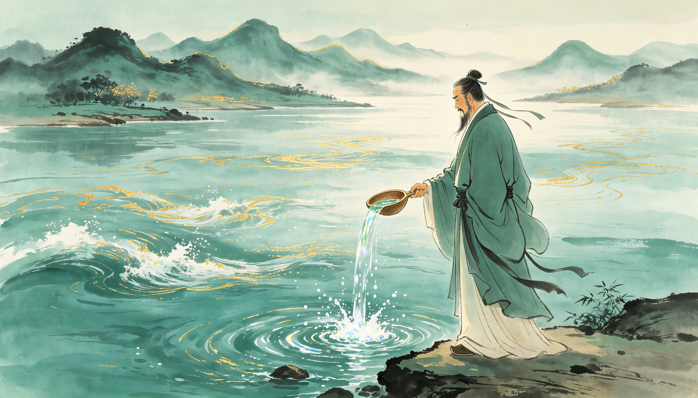

🧠 本多媒体书含 10 节课 · 16 个互动游戏 · 5 个精讲视频 · 5 段语音领读 · 12 枚成就徽章。前 6 节免费试读，解锁全部后可玩所有游戏、收集全部徽章。管理员账号可直读全书。

价值
张磊 · 高瓴资本创始人 · 长期主义
长期主义时间的朋友动态护城河价值投资🎬 开场视频 · 先看这个
高瓴资本张磊，从 2000 万美元起步，15 年做到 5000 亿美元。他说：“我们是创业者，恰巧是投资人。”
第 1 课 · 三把火：知识、能力、价值观（免费）
理解 · 投资人的三重修炼
张磊说，真正的投资人要点燃三把火：对知识的渴望、对能力的打磨、对价值观的坚守。
没有知识，看不懂生意；没有能力，拿不住机会；没有价值观，赚快钱的路比走正道短得多，但终点也差得多。
🔥 核心一句话：价值观是底线，知识是工具，能力是手艺——三者缺一不可。

记忆 · 金句卡
「投资不是比谁赚得多，而是比谁活得久、走得远。」
第 2 课 · 弱水三千，只取一瓢（免费）
理解 · 能力圈：知道自己不知道什么
市场上机会千千万，张磊说：“弱水三千，只取一瓢饮。”
高瓴只投自己真正懂的领域：消费、医药、科技、企业服务。看不懂的，再热门也不碰。
🛖 巴菲特的呼应：“对你的能力圈来说，最重要的不是它有多大，而是你如何界定它的边界。”

记忆 · 能力圈三问
| 问题 | 判断 |
|---|---|
| 这门生意我能用一句话说清吗？ | 说不清=看不懂 |
| 它靠什么赚钱，十年后还在吗？ | 看不懂=别投 |
| 我比市场上大多数人懂它吗？ | 不懂=没有优势 |
第 3 课 · 长期主义：做时间的朋友（免费）
理解 · 流水不争先，争的是滔滔不绝
张磊在北大演讲中说：“流水不争先，争的是滔滔不绝。”
投资不是比谁一年赚最多，而是比谁十年、二十年、三十年一直留在牌桌上。
⏳ 思维翻转：时间是好生意的朋友，烂生意的敌人。好公司，越拿越值钱；烂公司，越等越完蛋。
第 4 课 · 发现价值与创造价值（免费）
理解 · 不只是发现，更是创造
传统价值投资是“发现被低估的好公司”。张磊说：“我们不仅要发现价值，更要帮助企业创造价值。”
高瓴投了之后不是坐等升值，而是帮企业数字化、帮它降本增效、帮它连接资源——让好公司变得更好。
🔨 经典案例：百丽国际——高瓴买下百丽后，不是拆分出售，而是用数字化改造这家传统鞋企，帮它跟上新零售。
记忆 · 两种投资人
| 发现型 | 创造型 |
|---|---|
| 找便宜货 | 做好生意 |
| 坐等升值 | 主动赋能 |
| 赚差价 | 赚成长 |
第 5 课 · 研究驱动：关键时点与关键变化（免费）
理解 · 投资是研究的副产品
张磊说：“长期研究，就是在关键时点、做关键变化的判断。”
独立研究 = 独特视角 + 数据洞察。不是跟风看研报，而是自己钻到行业里去看：技术变了什么？需求变了什么？谁在真正解决问题？
🔍 研究方法论：① 看10年行业数据 ② 访谈20个从业者 ③ 问3个问题：什么变了？谁受益了？能持续多久？
记忆 · 长期研究 vs 短期交易
| 短期交易 | 长期研究 |
|---|---|
| 看K线 | 看10年产业趋势 |
| 听消息 | 做独立调研 |
| 赚波动的钱 | 赚成长的钱 |
第 6 课 · 动态护城河（免费）
理解 · 世界上唯一的护城河
张磊说：“世界上只有一条护城河，就是不断创新、疯狂地创造价值。”
传统护城河是“静态”的——品牌、专利、规模。张磊说这不够：真正的护城河是企业持续进化的能力，是流动的、生长的。

🏰 思维翻转：静态护城河会被时间磨平，动态护城河越流越宽。投资要投“会进化的企业”，不是“有城墙的企业”。
第 7-10 课 · 付费内容
🔒 本节为付费内容 · 解锁后可阅读：七大高瓴公式、选择比努力重要、人才与组织、做难而正确的事 + 全部游戏与徽章
🔓 解锁 · 开通全部内容
解锁你将获得：第 7-10 课完整内容（七大公式、选择、人才组织、难而正确）+ 全部 16 个互动游戏 + 全部 12 枚徽章 + 45倍回报实战视频。
🎮 游戏大厅（16 个互动游戏）
🏅 成就徽章（12 枚）
📌 更多推荐
本书出自「熙祺智书」投资理财专题。配套阅读：《穷查理宝典》《安全边际》《股市稳赚》。